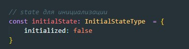

1 конечно же меняем расширение с JS на TS
И конечно же при попытке собрать проект мы получим кучу ошибок:
Первое на что он ругается - это то что нам надо указать тип для action
Поэтому мы можем указать тип для action: any

Аналогично поступаем с dispatch в thunk
И вот наше приложение запустилось. Но везде проставлять тип any такое себе решение. в качестве временного оно может и пойдет. Но нам надо сделать нормальную типизацию. Начнем с объекта initialState. Повторю что это за объект? это то что мы передаем нашему reducer в качестве state по умолчанию. Вот как он выглядит:
Теперь нам надо создать тип для нашего дефолтного state. Вот ка он будет выглядеть для конкретно нашего варианта
Теперь указываем для нашего state по умолчанию тип
Так же у нас reducer - это функция которая возвращает state. Поэтому мы так же можем указать тип возвращаемого объекта

Точно так же поступаем с объектом Action, вот как выглядит сейчас наш Action (т.е. в нем есть только один ключ - type)

Так же для него создаем type
Почему мы в типе не указали string? Ведь type будет содержать строку. Но! Нам не нужна любая строка, нам нужна конкретная. т.е. в type кроме как значения константы SET_INITIALIZED ничего быть не должно. Почему мы использовали typeof? D данном контексте это не тот typeof из ванильного JS, это typeof именно typeScript, который говорит что тип будет определен значением константы SET_INITIALIZED
Функция actionCreater возвращает объект action, зададим тип возвращаемому объекту:
Т.к. функция actioncreator возвращает определенный объект, нам не нужно прописывать интерфейс этого объекта. Для описания типа action мы можем использовать вот такую конструкцию:

ReturnType - это функция typescript которая возвращает готовый тип на основании переданного ей аргумента. В данном случае мы передали функцию actionCreator. Так как функция возвращает объект, на основании этого объекта с помощью оператора typeof будет возвращен новый тип
После того как мы указали все типы actionCreator мы можем создать общий тип который будет содержать все типы доступных actionCreator. Вот как это будет выглядеть:
Теперь в Reducer мы можем указать нормальный тип у action